610バスケットボールジャーナル610 JOURNAL — BASKETBALL × CULTURE
メディアエージェンシー 610（シックステン）が運営するバスケットボール専門メディア。NBA速報、Bリーグ・日本代表などの国内バスケ、キックス、カルチャーのニュースと読みものを日本語で日々更新。すべての記事に出典を明記しています。


20年ぶりの復刻 —— Air Jordan 4「Tour Yellow」9月5日発売
Air Jordan 4「Tour Yellow」が2026年9月5日に復刻発売。2006年の初リリースから20年、ジョーダン ブランドの"LS"時代を象徴するカラーが戻る。WearTestersはパフォーマンスレビューも公開した。

川久保玲がAir Jordan 11を"ドレスシューズ"に —— COMME des GARÇONS HOMME PLUSコラボ、9月5日発売
COMME des GARÇONS HOMME PLUSとJordan Brandによるコラボレーション「Air Jordan 11」が2026年9月5日発売。ブラックとホワイトの2色展開、価格358ドル。1995年にティンカー・ハットフィールドが手がけた名作を、川久保玲がミニマルなドレスシューズへと再構築した。

2026-27シーズンスローガンは「BREAK THE ORDER」 —— 群馬クレインサンダーズ、B.PREMIER初年度へ
B.LEAGUEのB.PREMIER所属クラブ「群馬クレインサンダーズ」は9月5日、2026-27シーズンのスローガンを「BREAK THE ORDER」に決定したと発表した。ヘッドコーチはカイル・ミリング氏、キャプテンは辻直人選手が3年目でそれぞれ続投し、新加入のスタンリー・ジョンソン選手、鶴巻啓太選手を加えた12名体制でB.PREMIER初代チャンピオンを目指す。

WNBAコミッショナー、キャシー・エンゲルバート氏が年内退任へ
WNBAのキャシー・エンゲルバート コミッショナー(61)が、12月31日付で退任することが決まったと、ESPNのシャムズ・チャラニア記者らが9月4日(現地時間)、複数の関係者の話として報じた。後任探しは早ければ今月中にも始まるという。

セルティックスvs76ers、"史上最多"のライバル対決が再燃 —— ESPNが2026-27シーズン注目の10大リバルリーを選出
ESPNのザック・クラム記者は9月4日(現地時間)、2026-27シーズンを前にNBAの注目リバルリー・トップ10を選出する特集記事を公開。史上最多の通算23度のプレーオフ対決があるセルティックスvs76ersを1位とし、サンダーvsスパーズ、ドンチッチ移籍後のマーベリックスvsレイカーズなども上位に選出している。

新HCスウィーニーで巻き返しなるか —— ESPN、オーランド・マジックの2026-27シーズンを展望
ESPNは9月4日(現地時間)、オーランド・マジックの2026-27シーズンを展望する特集記事を公開。前シーズン限りでジェイマール・モズレー氏を解任しショーン・スウィーニー新ヘッドコーチを招へいしたほか、ニコラ・ヴチェビッチを1年390万ドルで再獲得したと伝え、パオロ・バンケロ、フランツ・ワグナーらの健康状態とディフェンス改善が浮上の鍵になるとしている。
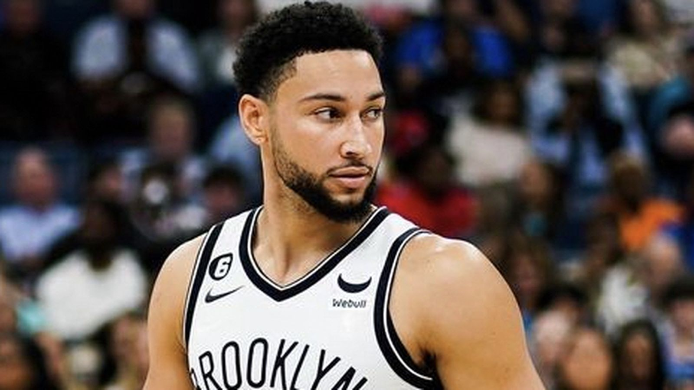
1年半ぶりの現役復帰 —— ベン・シモンズ、キングスと1年350万ドルで契約合意
元NBA新人王のベン・シモンズ(30)が、サクラメント・キングスと1年350万ドルの契約で合意したと、ESPNのシャムズ・チャラニア記者らが9月4日(現地時間)、複数の関係者の話として報じた。昨シーズンは背中と脚の故障で全休しており、約1年半ぶりの現役復帰となる。

琉球ゴールデンキングスの「キングスU15」、沖縄県予選が9月5日開幕 —— 全国大会出場権懸け熱戦
沖縄バスケットボール株式会社は9月4日、運営するB.LEAGUEクラブ「琉球ゴールデンキングス」の育成組織「キングスU15」が、9月5日開幕の「2026年度 第15回U15クラブバスケットボールゲームス沖縄県予選会」に出場すると発表した。

ENEOSサンフラワーズから女子日本代表に4名選出 —— 田中こころ・今野紀花ら、FIBA女子W杯2026へ
ENEOS株式会社は9月3日、実業団の女子バスケットボールクラブ「ENEOSサンフラワーズ」から、9月4日開幕の「FIBA女子バスケットボールワールドカップ2026」女子日本代表に、田中こころ・今野紀花の両選手とスタッフ2名の計4名が選出されたと発表した。
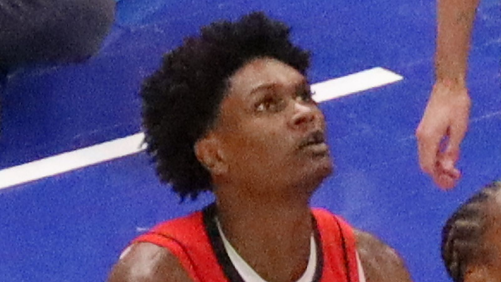
次代のロケッツを託される —— アメン・トンプソン、5年2億800万ドルの契約延長で合意
ヒューストン・ロケッツが、主力ガードのアメン・トンプソン(23)と5年総額2億800万ドルのルーキー契約延長で合意したと、ESPNが9月3日(現地時間)、複数の関係者の話として報じた。10%のトレードキッカーが付帯し、2024年のアルペレン・シェングンの延長契約とサラリーキャップに占める割合は同水準だという。
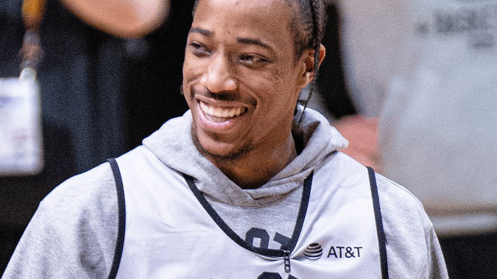
契約延長のトンプソンに"Win-Win"評価、デローザンはナゲッツへ —— ESPNが2026年NBA自由契約を採点
ESPNのザック・クラム記者は9月3日(現地時間)、2026年NBAオフシーズンの主要なFA契約・契約延長を採点する分析記事を公開。ヒューストン・ロケッツとアメン・トンプソンの5年2億800万ドル契約延長を「双方にとって理にかなった合意」と評価したほか、デマー・デローザンのナゲッツ入り、ジョナサン・クミンガのティンバーウルブズ移籍にも言及している。

「NBA docomo」新アンバサダーに河村勇輝 —— NBA2026-27シーズンパス、本日発売開始
NTTドコモは9月3日、映像配信サービス「NBA docomo」の新アンバサダーに河村勇輝選手が就任したと発表。同日からNBA2026-27シーズンを通じて視聴できるシーズンパス(16,500円)の販売も始まった。
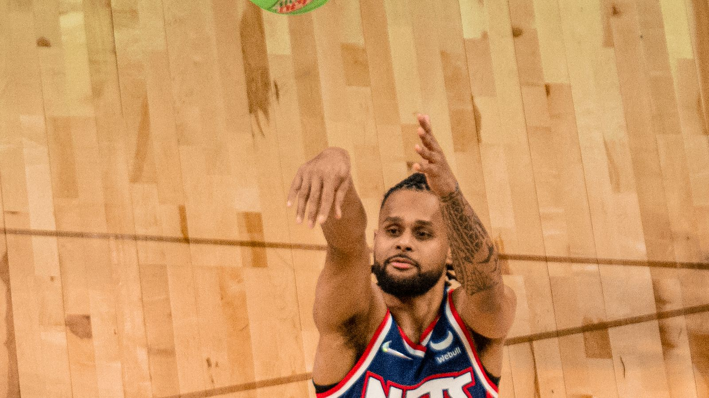
元スパーズの名コンビ再結成 —— パティ・ミルズ、恩師トニー・パーカー率いるASVELへ移籍
元NBA選手のパティ・ミルズが、トニー・パーカーがヘッドコーチを務めるフランス1部ASVELヴィルールバンヌと1年契約を結び加入したと、ESPNが9月2日(現地時間)報じた。スパーズで9年間チームメートだった2人が「勝つ文化」の再現を目指す。
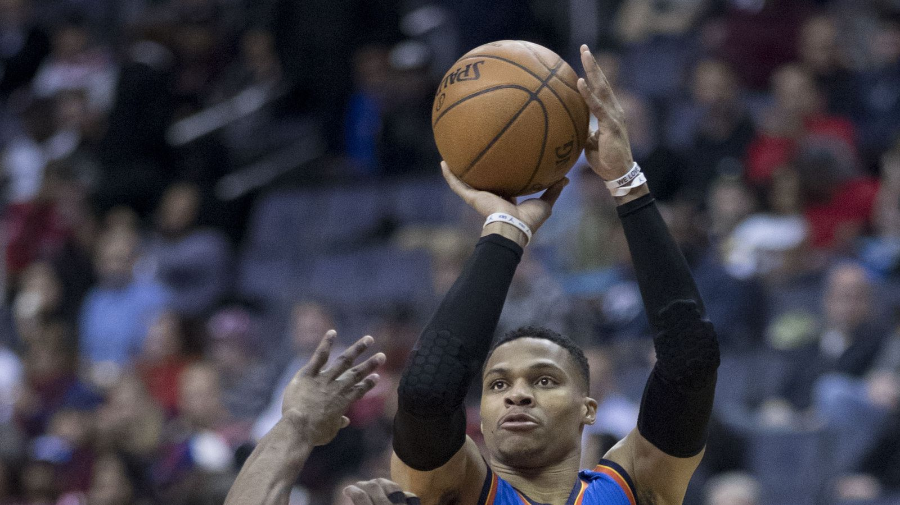
ラッセル・ウェストブルック、新リーグ「Project B」の共同創業者兼最高戦略責任者に就任
引退したばかりのラッセル・ウェストブルックが、2027年1月開幕予定の男女新リーグ「Project B」に共同創業者兼チーフ・ストラテジー・オフィサーとして参加し取締役会にも加わったと、ESPNが9月2日(現地時間)報じた。

ライバー事務所Beril、横浜エクセレンスとオフィシャルスポンサー契約 —— 2026-27シーズンから冠試合開催
ライバーマネジメント事務所「Beril」を運営するlapaz株式会社は9月2日、B.LEAGUEのプロバスケットボールクラブ「横浜エクセレンス」と2026-27シーズンのオフィシャルスポンサー契約を締結したと発表した。ホームゲームでのBeril冠試合も予定する。
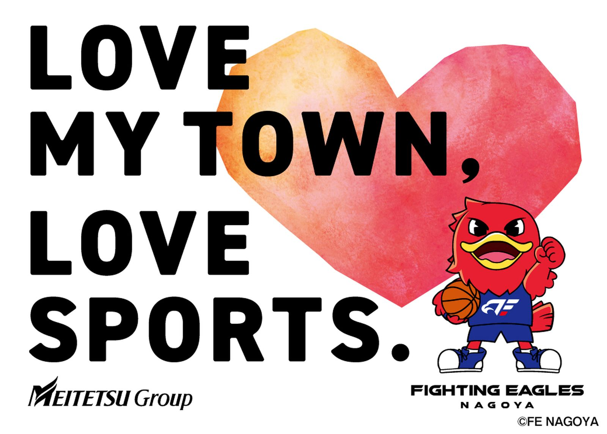
名駅に一夜限りのバスケコート出現 —— 名鉄×FE名古屋、包括連携協定を締結し9月15日にイベント開催
名古屋鉄道は9月2日、B.LEAGUEのファイティングイーグルス名古屋と包括連携協定を締結、9月15日に名古屋駅前「Meieki Parklet」で一夜限りのバスケットボールイベントを共同開催すると発表した。期間中は「ナナちゃん」もFE名古屋のユニフォーム姿になる。
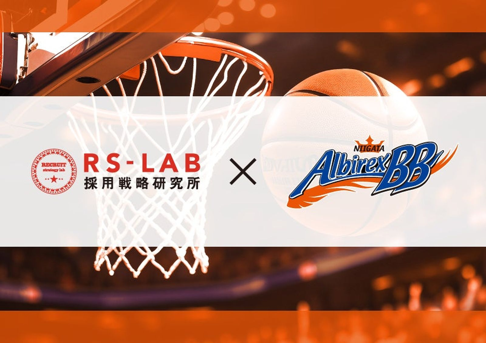
新潟アルビレックスBB、採用戦略研究所とオフィシャルパートナー契約 —— 「新潟社長図鑑」運営元が2026-27シーズンから参入
株式会社採用戦略研究所は9月2日、B.LEAGUE ONE・新潟アルビレックスBBと2026-27シーズンよりオフィシャルパートナー契約を締結したと発表した。新潟県内の経営者を取材するメディア「新潟社長図鑑」の運営元が、地域の採用課題解決へ連携する。
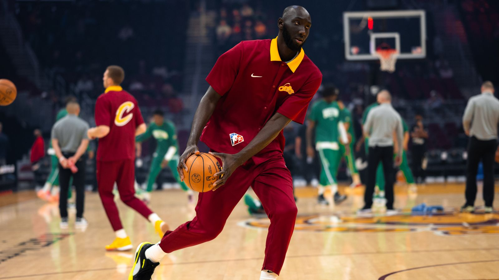
ターコ・フォール、76ersとキャンプ契約 —— ネルソン・ジュニア、セイント・トーマスも同時合意
76ersは9月1日、身長231cm(7フィート6インチ)のセンター、ターコ・フォールとエキシビット10契約(キャンプ契約)で合意したと発表。ジェイミア・ネルソン・ジュニア、セイント・トーマスとも同時契約し、3人は今月開催のキャンプでロースター入りを争う。
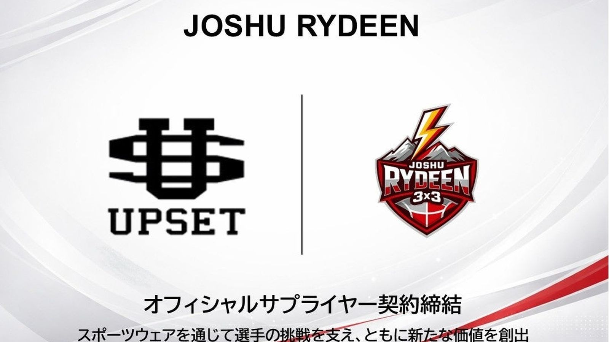
JOSHU RYDEEN、株式会社アップセットとオフィシャルサプライヤー契約締結 —— 群馬発・女子3x3が新シーズンへ体制強化
群馬県太田市を拠点とする女子3x3プロバスケットボールチーム「JOSHU RYDEEN」は9月1日、スポーツメーカーの株式会社アップセットとオフィシャルサプライヤー契約を締結したと発表した。
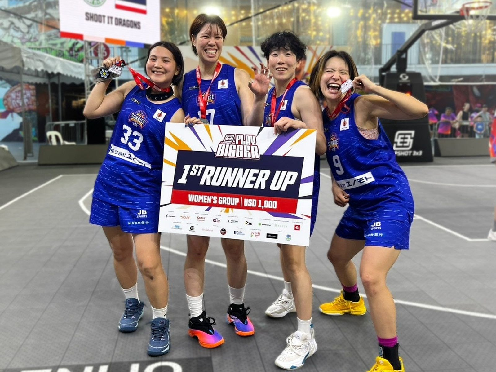
世界一に続き、国際舞台で準優勝 —— 上野原サンライズ女子、シンガポール「Jumpshot 3x3」で1st Runner Up
ジェリービーンズグループが提携する3x3チーム「上野原サンライズ」の女子チームは、シンガポールで開催された国際大会「Jumpshot 3x3 Season 3: Play Bigger」女子の部で準優勝したと9月1日発表した。
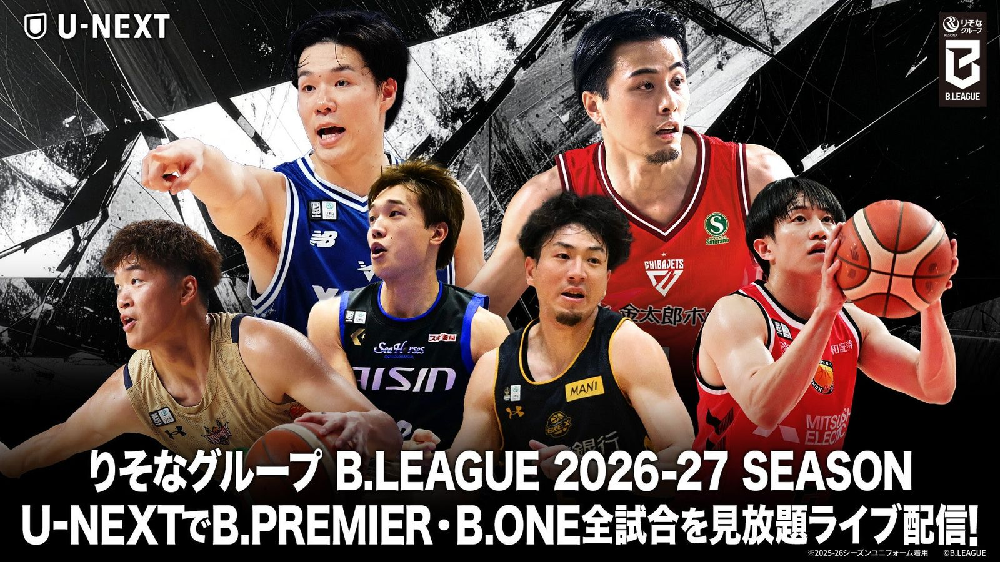
U-NEXT、B.LEAGUE新体制の全試合を見放題配信 —— B.PREMIER・B.ONE、9月22日開幕
U-NEXTは9月1日、9月22日開幕の「りそなグループ B.LEAGUE 2026-27 SEASON」でB.PREMIER最大803試合に加え、新たにB.ONE最大798試合も見放題でライブ配信すると発表した。追加課金なしで全試合が視聴できる。

バンビシャス奈良「バスケの日2026 in 奈良市」開催 —— 奈良市長も参加、約8時間バスケ三昧の一日に
バンビシャス奈良は8月29日、老若男女が一日バスケを楽しむ「バスケの日2026 in 奈良市」をロートアリーナ奈良で開催した。仲川げん奈良市長も参加し、フリースロー大会や中学生以上の8分流し試合など多彩な企画で朝から夕方まで盛り上がった。
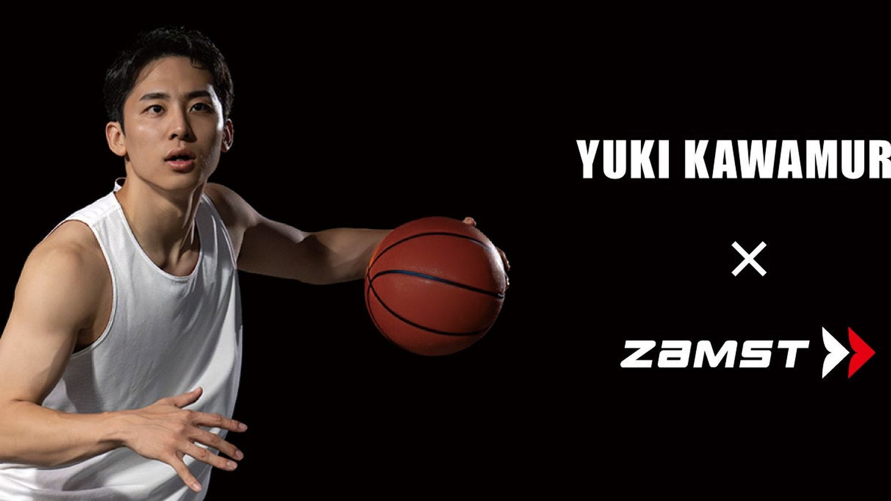
ザムスト、河村勇輝選手とスポンサーシップ契約を更新 —— 2021年から続く4年目のパートナーシップ
日本シグマックスは9月1日、サポート・ケア製品ブランド「ZAMST」と河村勇輝選手のスポンサーシップ契約を更新したと発表した。大学生だった2021年からの関係が、米国挑戦を続ける現在も継続する。
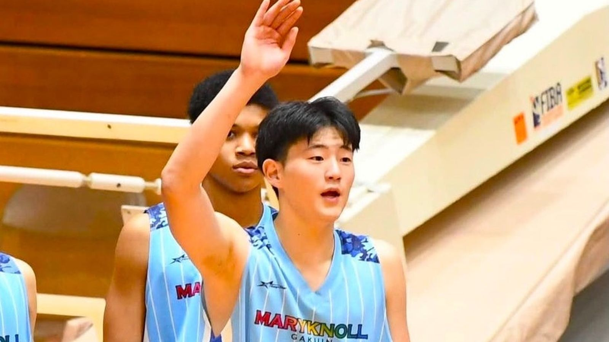
全中制覇の濵田誉（四日市メリノール学院）、堺整骨院とアンバサダー契約 —— 熊本地震復興応援大会も9月開催
堺整骨院グループは9月1日、全国中学校バスケットボール大会を制した濵田誉選手（四日市メリノール学院中学校3年）とアンバサダー契約を締結したと発表した。あわせて熊本地震復興応援「堺整骨院杯」を9月5・6日に熊本県で開催する。

HIS、B.LEAGUEと「グローカル・パートナー」契約 —— 公式ツアー「B.旅」独占展開へ
HISは8月31日、B.LEAGUEとグローカル・パートナー契約を締結したと発表した。全クラブ対象の公式観戦ツアー「B.旅」の企画・販売独占権を取得し、アジア中心の海外プロモーションやインバウンド送客も進める。

首都圏189件、コートマップで一望 ——「バスケしようよ！」が新機能公開
草バスケコミュニティサービス「バスケしようよ！」を運営する株式会社Walkersは8月31日、首都圏のストリートバスケットボールコート189件を地図から探せる新機能「コートマップ」を公開したと発表した。東京110件・千葉29件・埼玉28件・神奈川22件を掲載し、会員登録不要・無料で利用できる。
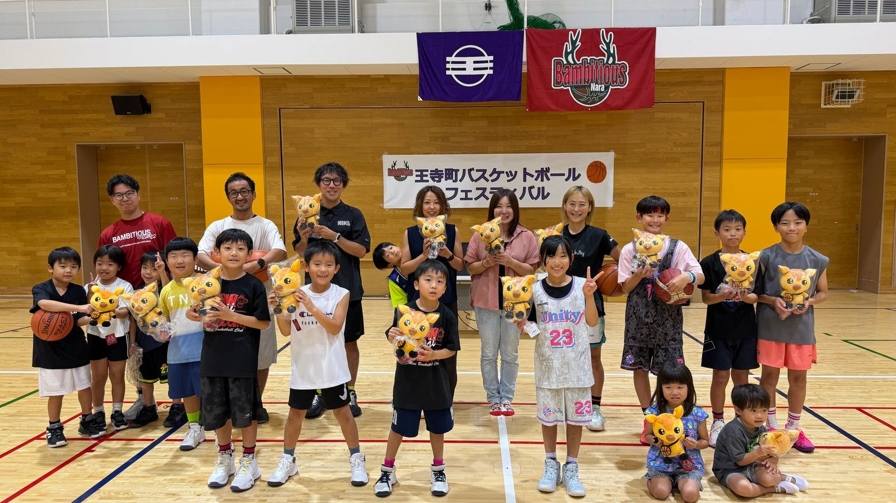
王寺町とバンビシャス奈良、バスケットボールフェスティバル開催 —— シュート大会や3x3で子どもたちと交流
B.LEAGUE・バンビシャス奈良は8月23日、奈良県王寺町のいずみアリーナで「バスケットボールフェスティバル」を実施したと発表した。シュート大会やバスケットボール教室、3x3の試合、抽選会など多彩な企画で、選手と多くの子どもたちが交流した。

隠れた名作「COURT STAR」が令和に蘇る —— コンバース「2FACED」9月11日先行発売
コンバースジャパンは8月31日、80年代のアーカイブモデル「COURT STAR」を現代技術でアップデートしたバスケットボールシューズ「2FACED」を発表。MID・LOW・LE LOWの3モデルを9月11日にGALLERY・2 渋谷店とKinetics HARAJUKUで先行発売する。

ジョシュ・グリーン、ジャズへトレード成立 —— ティンバーウルブズ、クミンガ契約完了へサラリー捻出
ESPNのシャムズ・チャラニア氏が一報。ミネソタ・ティンバーウルブズはウィングのジョシュ・グリーンと現金をユタ・ジャズへトレードし、見返りにコーディ・ウィリアムズとジョン・コンチャーを獲得。グリーンの1470万ドルの給与を放出し、ジョナサン・クミンガとの2年1240万ドル契約を完了させるための資金繰りだった。

在籍200名突破 —— バスケットボールスクール「Rimtown」、元Bリーガー・齊藤洋介が指導
東京・神奈川・埼玉でバスケットボールスクール「Rimtown」を運営する株式会社neveleは、2026年8月にスクール在籍者数が200名を突破したと発表した。元Bリーガー・元3x3日本代表の齊藤洋介がメインコーチを務め、スキルだけでなく試合での判断力を養う指導を行っている。

夏休み、体育館に響いた歓声 —— 群馬クレインサンダーズ、県内7市町の放課後児童クラブを訪問
群馬クレインサンダーズは、群馬県が実施する「プロスポーツチーム等と連携したこどもの居場所づくり・体験創出モデル事業」の一環として、県内7市町の放課後児童クラブを訪問し、子どもたちを対象としたバスケットボール体験を実施したと8月28日発表した。基礎練習に加えゲーム性を取り入れたメニューを通じ、体を動かす楽しさや仲間と協力する大切さを伝えた。

奈良から次世代の舞台へ —— バンビシャス奈良U18・米田時生、B.LEAGUE U18 TRYOUT CAMP 2026に初選出
バンビシャス奈良U18に所属する米田時生選手（SG、175cm）が、B.LEAGUEユース育成プロジェクトの一環「B.LEAGUE U18 TRYOUT CAMP 2026」に初選出されたと、同クラブが8月27日発表した。キャンプは9月5・6日に駒沢オリンピック公園総合運動場 屋内球技場で行われる。

フランチャイズ史上2人目の栄誉 —— ラプターズ、カイル・ラウリーの背番号7永久欠番を発表
トロント・ラプターズは、カイル・ラウリーの背番号7を永久欠番にすると8月27日発表した。2026年1月10日のフィラデルフィア・セブンティシクサーズ戦後にセレモニーを行い、バンス・カーターに次ぐ球団史上2人目の永久欠番選手となる。ラウリーは9シーズン在籍しオールスター6回選出、2018-19シーズンの優勝メンバーだった。
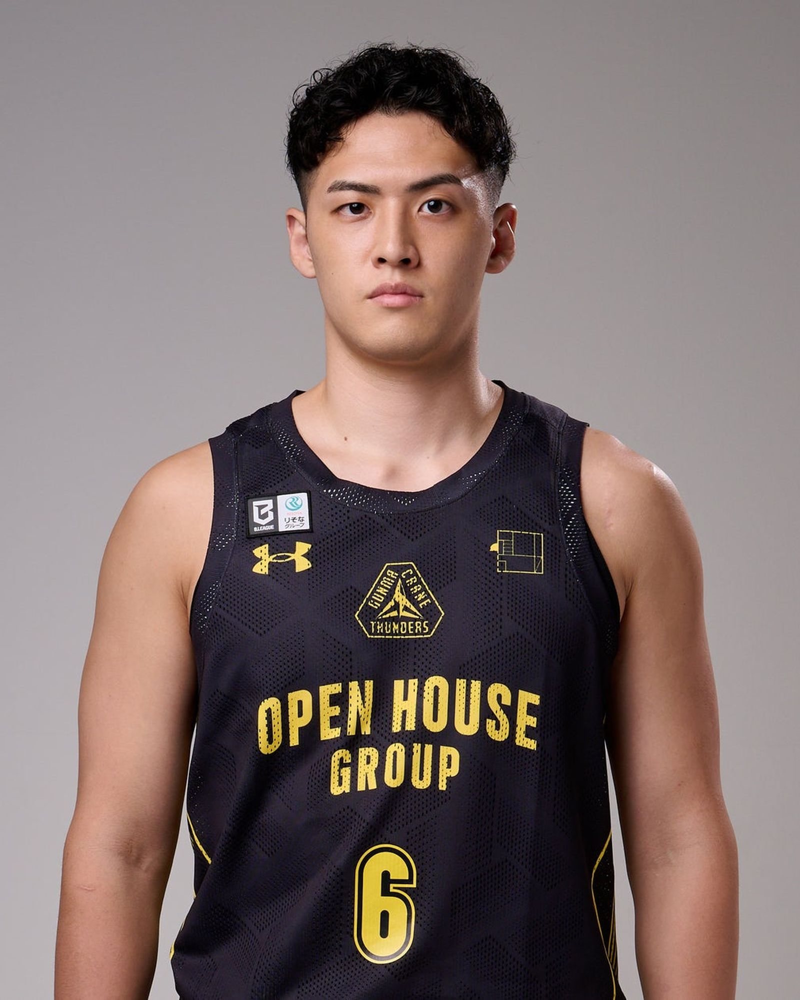
台湾で掴んだ国際経験 —— 群馬クレインサンダーズ・中村拓人、淺野ケニー、日本代表として第45回ウィリアム・ジョーンズカップ出場
群馬クレインサンダーズ所属の中村拓人選手、淺野ケニー選手が、2026年度バスケットボール男子日本代表として台湾で開催された「第45回ウィリアム・ジョーンズカップ」に出場したと同クラブが8月27日発表した。中村選手は4試合で26得点・13リバウンド・18アシスト、淺野選手は6試合で25得点・17リバウンド・2アシストを記録した。

地元企業が支える全国区の挑戦 —— 小松ウオール、北陸学院高校 男子バスケットボール部のメインパートナーに就任
石川県小松市の小松ウオール工業株式会社は、同県を拠点とする北陸学院高等学校 男子バスケットボール部のメインパートナーに就任したと8月27日発表した。8月22日に開幕した「U18日清食品トップリーグ2026 Div.1」に出場する同部を環境面から支援する。

茨城ロボッツ・吉井裕鷹選手、日本代表ロスターに選出 —— FIBAワールドカップ2027アジア予選、サウジアラビア戦
茨城ロボッツの吉井裕鷹選手が、8月28日未明(日本時間)にサウジアラビアで行われる「FIBAバスケットボールワールドカップ2027アジア地区予選Window4」のサウジアラビア代表戦で日本代表のロスターに選出されたと茨城ロボッツが8月27日発表した。
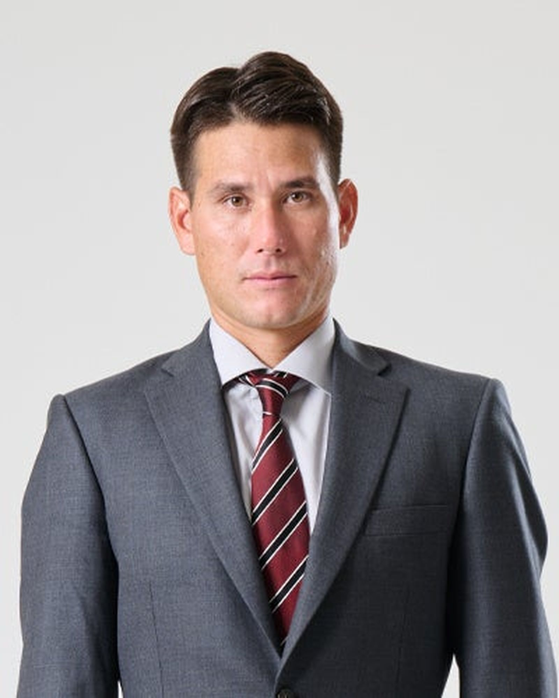
大阪エヴェッサ・藤田弘輝HC、日本代表コーチに選出 —— FIBAワールドカップ2027アジア予選、サウジアラビア戦で指揮
大阪エヴェッサの藤田弘輝ヘッドコーチが、8月28日にサウジアラビアで行われる「FIBAバスケットボールワールドカップ2027アジア地区予選Window4」のサウジアラビア戦で日本代表コーチに選出されたと大阪エヴェッサが8月27日発表した。

ジョナサン・クミンガ、ティンバーウルブズ入り合意 —— 2年1240万ドル、レイカーズのサインアンドトレード案を退ける
ESPNのシャムズ・チャラニア氏が一報。フリーエージェントのジョナサン・クミンガ(23)がミネソタ・ティンバーウルブズと2年1240万ドル(2年目にプレーヤーオプション付き)の契約に合意。レイカーズなど複数球団の争奪戦を制し、来夏の完全なフリーエージェント権取得を見据えた短期契約を選んだ。

ベネディクト・マチュリン、ペリカンズ入り合意 —— 2年1600万ドル、クリッパーズへのQO撤回で移籍実現
ESPNのシャムズ・チャラニア氏が一報。ベネディクト・マチュリン(24)がニューオーリンズ・ペリカンズと2年1600万ドル(プレーヤーオプション付き)の契約に合意。クリッパーズへのクオリファイング・オファーを撤回しての移籍となった。
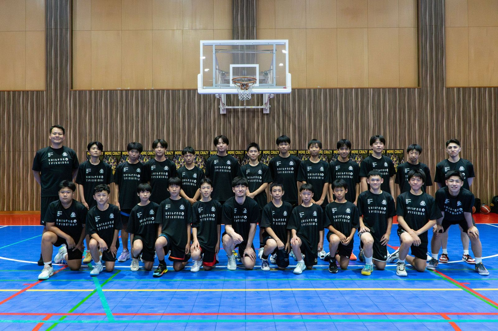
中学・高校生34人が参加 —— 群馬クレインサンダーズ、鶴巻啓太・細川一輝が指導するバスケットボールスキルアップクリニックを開催
群馬クレインサンダーズは8月2日・9日の2日間、群馬パース大学で「バスケットボールスキルアップクリニック」を開催。鶴巻啓太選手・細川一輝選手が指導にあたり、県内外の中学生・高校生34人が参加した。

北部地域と交流、約90人が参加 —— 琉球ゴールデンキングス「KINGS ACADEMY CUP 2026」を名護市で開催
沖縄バスケットボール株式会社（琉球ゴールデンキングス）が運営するキングスアカデミーは8月23日、沖縄県名護市で「KINGS ACADEMY CUP 2026」を開催。北部地域の部活動チームとスクール生ら約90人が参加した。
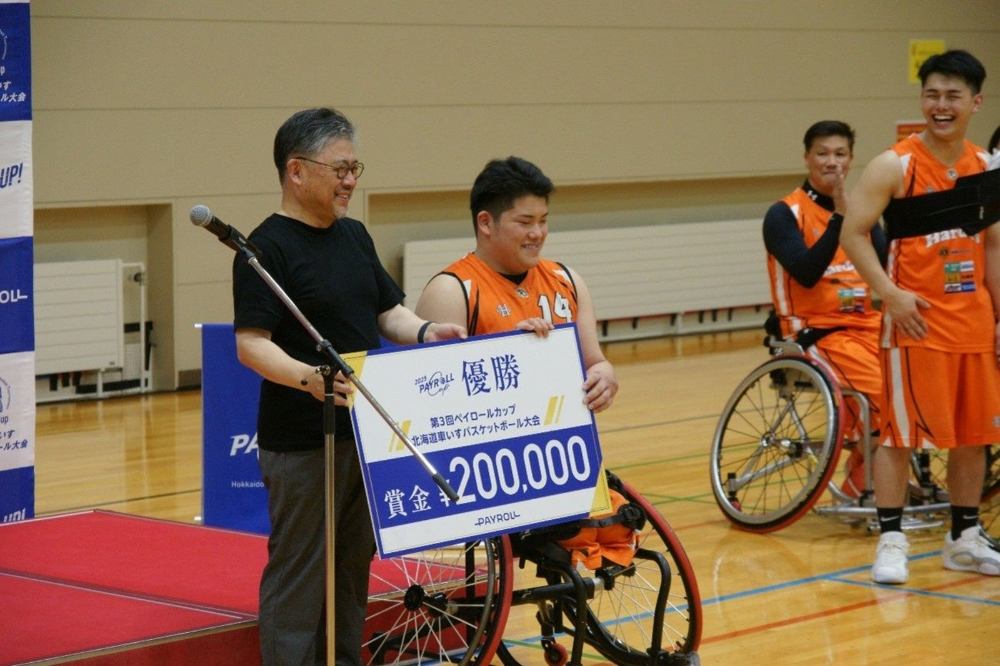
車いすバスケ「ペイロールカップ」第4回、9月26日・27日に札幌開催 —— 札幌ノースウィンドなど6チームが参加
株式会社ペイロールが車いすバスケットボール大会「ペイロールカップ」第4回を2026年9月26日・27日に札幌市西区体育館で開催。今回は6チームが参加し、入場は無料。

さいたまブロンコス vs 秋田ノーザンハピネッツ、プレシーズンマッチを8月29日開催 —— Red EyeやENBASEが試合前を彩る
さいたまブロンコスが8月29日、蓮田市総合市民体育館パルシーでB.PREMIERの秋田ノーザンハピネッツを迎えるプレシーズンマッチを開催。試合前にはRed EyeやENBASEによるオープニングイベントも行われる。

ウォリアーズがジョージ・ニアングと1年390万ドルで契約合意 —— ブランドン・ウィリアムズに続く今夏2人目の補強、15人ロースターが確定
ゴールデンステート・ウォリアーズがフリーエージェントのベテランPF、ジョージ・ニアングと1年390万ドルで契約合意。ESPNのシャムズ・チャラニア氏が一報。同日発表のブランドン・ウィリアムズに続く今夏2人目の外部補強で、15人ロースターが確定した。
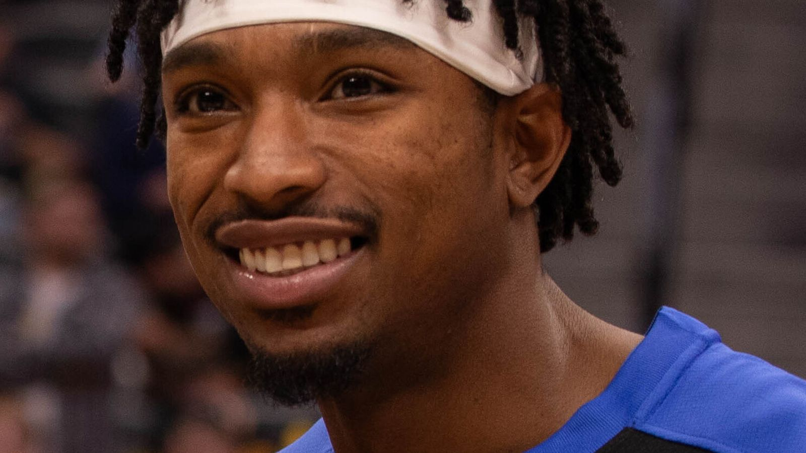
ウォリアーズがブランドン・ウィリアムズと1年260万ドルで契約合意 —— マーベリックスから加入、バトラー&ムーディ離脱のベンチ層を補強
ゴールデンステート・ウォリアーズがフリーエージェントのガード、ブランドン・ウィリアムズと1年260万ドル(最低保証額)で契約合意。代理人がESPNのシャムズ・チャラニア氏に明らかにした。マーベリックスから加入し、開幕から離脱するバトラーとムーディの穴を埋める狙い。

シェイドン・シャープが右膝半月板損傷 —— ブレイザーズの23歳、全治6ヶ月で2026-27シーズン大半を欠場へ
ESPNのシャムズ・チャラニア氏が一報。ポートランド・トレイルブレイザーズのシェイドン・シャープ(23)が右膝の半月板を損傷し、全治6ヶ月の見通し。前季に続き2年連続の長期離脱となる。

日本経済大学、バスケ部の監督と学生が国際舞台へ —— 片桐監督が日本代表コーチとしてジョーンズカップ、中老選手はWKBLフューチャーズリーグの日本学生選抜に
日本経済大学男子バスケットボール部の片桐章光監督が台湾開催「第45回ウィリアム・ジョーンズカップ」に日本代表コーチとして参加。女子バスケットボール部の中老小雪選手は日本学生選抜に選出され、案浦知仁監督もアシスタントコーチとして韓国開催の「2026 WKBLフューチャーズリーグ」に参加した。

陽吉グループ、大分・柳ヶ浦高校男子バスケ部のスポンサーに就任 —— U18日清食品トップリーグ2026初出場、開幕戦で鳥取城北を67-57で撃破
リユース企業の陽吉グループが大分県・柳ヶ浦高校男子バスケットボール部のスポンサーに就任し、ユニフォームを贈呈した。柳ヶ浦は「U18日清食品トップリーグ2026 ディビジョン1」に初出場し、8月22日の開幕戦で鳥取城北を67-57で破って白星スタートを切った。
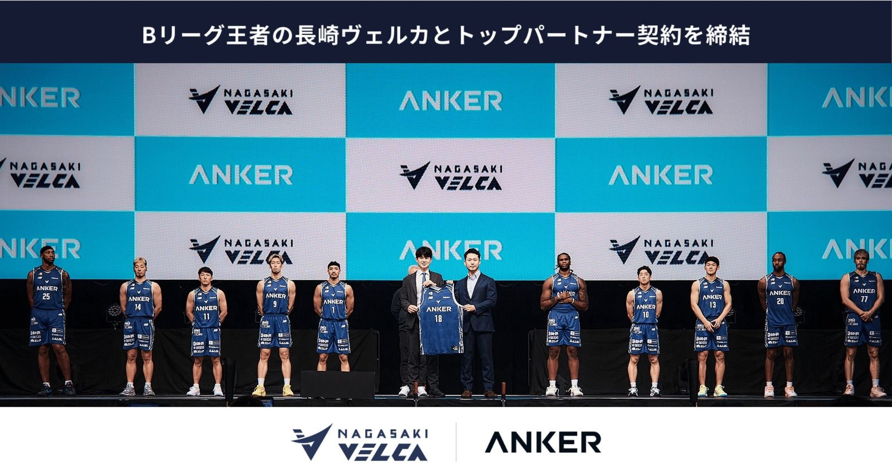
Anker Japan、Bリーグ王者・長崎ヴェルカとトップパートナー契約 —— ユニフォーム胸ロゴとアリーナ命名権を取得、直営店も出店
アンカー・ジャパンがB.LEAGUE王者の長崎ヴェルカとトップパートナー契約を締結。2026-27シーズンユニフォーム胸部へのロゴ掲出やホームアリーナ「HAPPINESS ARENA」の命名権を取得し、長崎県内に直営店「Anker Store」を2店舗出店する。

びんご福山デニックス、9月12日・13日にホームゲーム —— 観戦無料、九州電力・富士通と対戦
広島県福山市を拠点にSB1リーグで戦うびんご福山デニックスが、2026年9月12日・13日にエフピコアリーナふくやまで観戦無料のホームゲームを開催する。対戦相手は九州電力(福岡)と富士通(神奈川)。

デマー・デローザン、ナゲッツ入り合意 —— ヒート等蹴り1年390万ドル、ヨキッチ&マレーの下でプレーオフ勝負へ
ESPNのシャムズ・チャラニア氏が一報。6度のオールスターに選出されたデマー・デローザン(36)が、ヒート・ウィザーズ・ペリカンズとの交渉を経てデンバー・ナゲッツと1年390万ドルの契約に合意したと報じられた。

クレイ・トンプソン、マーベリックス退団へ —— ヒート入り濃厚、ジアニス擁する優勝候補に加入
ESPNのシャムズ・チャラニア氏が一報。ダラス・マーベリックスがクレイ・トンプソン(36)との契約を買い取ることで合意し、ウェイバー通過後はマイアミ・ヒートと契約する見通しだと報じられた。

ティンバーウルブズ&リンクス、支配株主が交代 —— マーク・スタッド氏がロア氏保有株の大半を取得、評価額45億ドル
ESPNが情報筋の話として報道。NBAミネソタ・ティンバーウルブズとWNBAミネソタ・リンクスの共同オーナー、マーク・ロア氏が保有株式の大半をマーク・スタッド氏に売却し、スタッド氏が両球団の支配株主・筆頭株主になることで合意した。
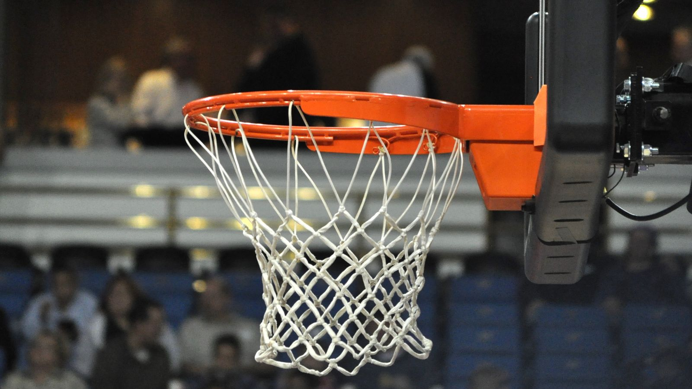
高校バスケの頂点争い、全56試合を無料生中継 —— スポーツナビ「U18日清食品トップリーグ2026」ライブ配信・速報
スポーツナビ株式会社は、高校バスケットボール最高峰リーグ「U18日清食品トップリーグ2026 ディビジョン1」全56試合を8月22日から11月15日にかけてライブ配信・試合速報で無料展開すると発表した。

コートを3分割、実戦スキルを叩き込む —— 琉球ゴールデンキングス「キングスバスケットボールスクールサマーキャンプ2026」
沖縄バスケットボール株式会社(琉球ゴールデンキングス)が運営するキングスバスケットボールスクールは、7月29日・8月5日・8月19日の3日間、小学4〜6年生を対象に『サマーキャンプ2026』を実施したと発表した。

「機敏性」で重なる2社 —— AGEST、東京ユナイテッドバスケットボールクラブとオフィシャルパートナー契約
ソフトウェア品質支援のAGESTが2026-27シーズンより、有明アリーナ拠点のB.LEAGUEクラブ・東京ユナイテッドバスケットボールクラブ(TUBC)とオフィシャルパートナー契約を締結した。
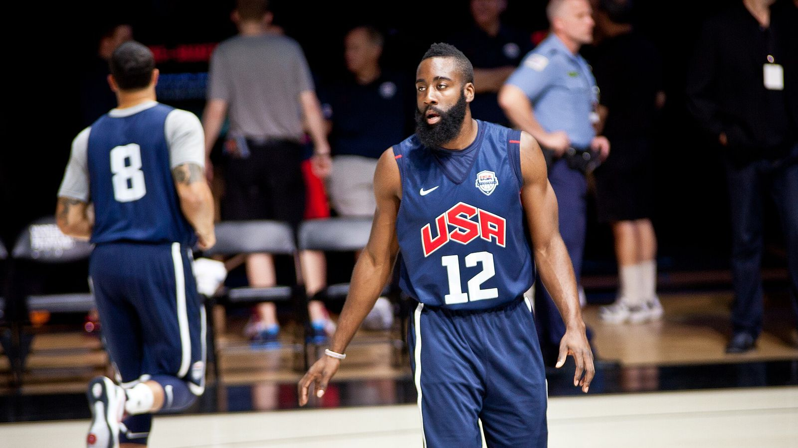
ハーデン、キャバリアーズ残留 —— 3年9700万ドルの新契約で合意
ジェームズ・ハーデンが、3年総額9700万ドルの新契約でクリーブランド・キャバリアーズに残留することで合意した。2028-29シーズンのプレーヤーオプションとトレードキッカー付き。代理人らがESPNに明らかにした。
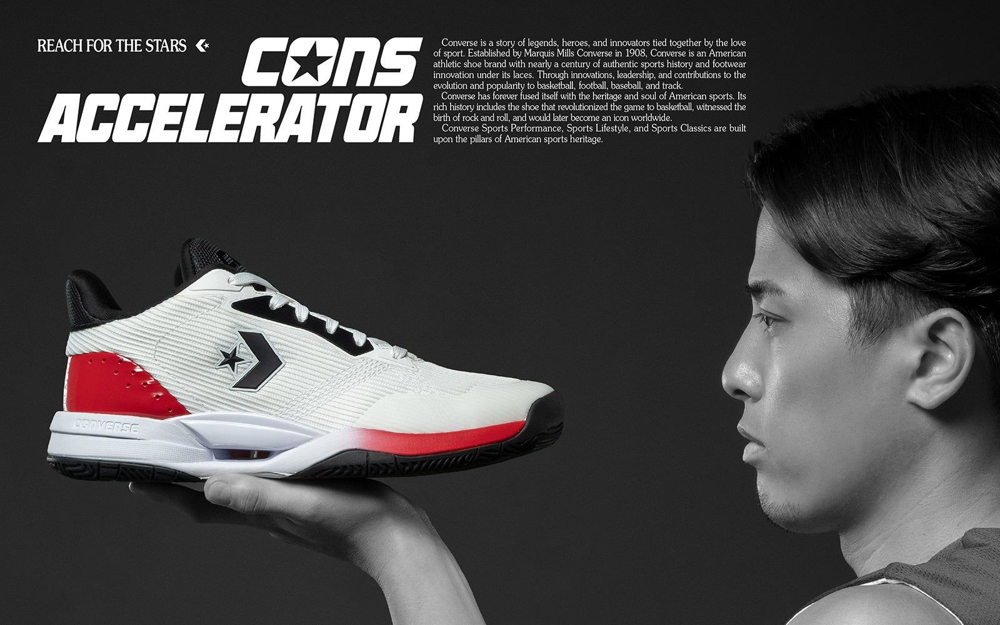
名作「ACCELERATOR」が最新技術で復活 —— コンバース「CONS ACCELERATOR SE LOW」8月25日発売
コンバースジャパンは8月20日、バスケットボールシューズ「CONS ACCELERATOR SE LOW」を8月25日に発売すると発表。アーカイブモデル「ACCELERATOR」を、新構造シャンクや中空ミッドソールなど最新技術でアップデートした。価格14,300円(税込)。

ワトソン、キャバリアーズへ —— ナゲッツとの5チーム間サイン&トレードで合意へ
Chris Haynes（NBA on Prime）が一報。デンバー・ナゲッツが、制限付きFAのペイトン・ワトソンをクリーブランド・キャバリアーズへ送るサイン&トレードに近づいている。5チーム間の取引で、ワトソンは4年8800万ドル(プレーヤーオプション付き)の契約条件に合意する見通し。

レイカーズ、バス家が最後の株式を手放す —— カシュナー氏とアイガー氏に17.8%売却、ジーニー・バスはガバナー退任へ
Shams Charania（ESPN）が一報。ロサンゼルス・レイカーズを保有するバス・ファミリー・トラストが、信託に残る17.8%の株式をジョシュ・カシュナー氏とボブ・アイガー氏に売却することを決定。完了後、ジーニー・バスはガバナーの資格を失う見通しとなった。

古巣へ、1年契約で復帰 —— ヘイウッド・ハイスミス、サンズと合意
Shams Charania（ESPN）が一報。FAのヘイウッド・ハイスミスが、フェニックス・サンズとの1年契約に合意した。
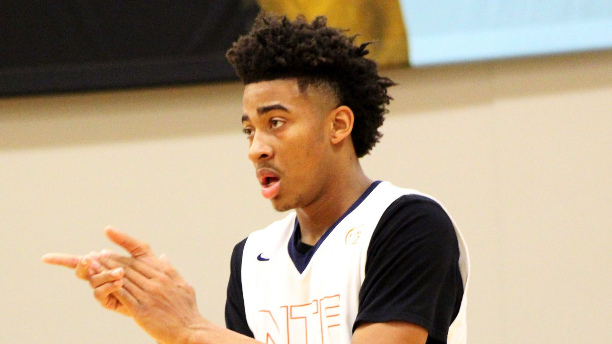
遅めのオフシーズンに、掘り出し物 —— トレンドン・ワトフォード、ペリカンズと1年290万ドルで契約合意
Shams Charania（ESPN）が一報。FAのトレンドン・ワトフォードが、ニューオーリンズ・ペリカンズと1年290万ドルの契約に合意した。

ホームアリーナに、クラブと同じ名前を —— 松江市総合体育館は9月から「バンダイナムコアリーナ松江」に
B.LEAGUE PREMIER参入の島根スサノオマジック。運営会社が松江市とネーミングライツ契約を締結、2026年9月1日から新愛称に。

「禁止」が生んだ伝説 —— エア・ジョーダン1とルールの向こう側
1足のシューズが、なぜ40年経っても語り継がれるのか。伝説の始まりにあったのは、リーグの規定と1枚の広告だった。

深夜2時、W杯への初戦 —— 最終予選サウジアラビア戦、ABEMAが無料生中継
W杯2027アジア最終予選が8月27日に開幕。八村塁と河村勇輝が合流予定の初戦を、ABEMAが無料生中継する。
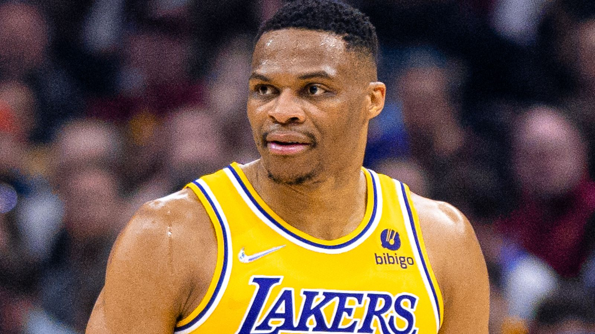
トリプルダブルの王が、コートを去る —— ラッセル・ウェストブルック、18シーズンで現役引退
Shams Charania（ESPN）が一報。2017年MVP、通算トリプルダブル209回の男が、自らの流儀で18年のキャリアに幕を下ろした。

有明に、日の丸のエースが帰ってきた —— 八村塁と河村勇輝、約2年ぶりの代表戦をABEMAが無料生中継
8月16日・有明アリーナの韓国戦。パリ五輪以来およそ2年ぶりに、2人が代表のコートへ戻る。
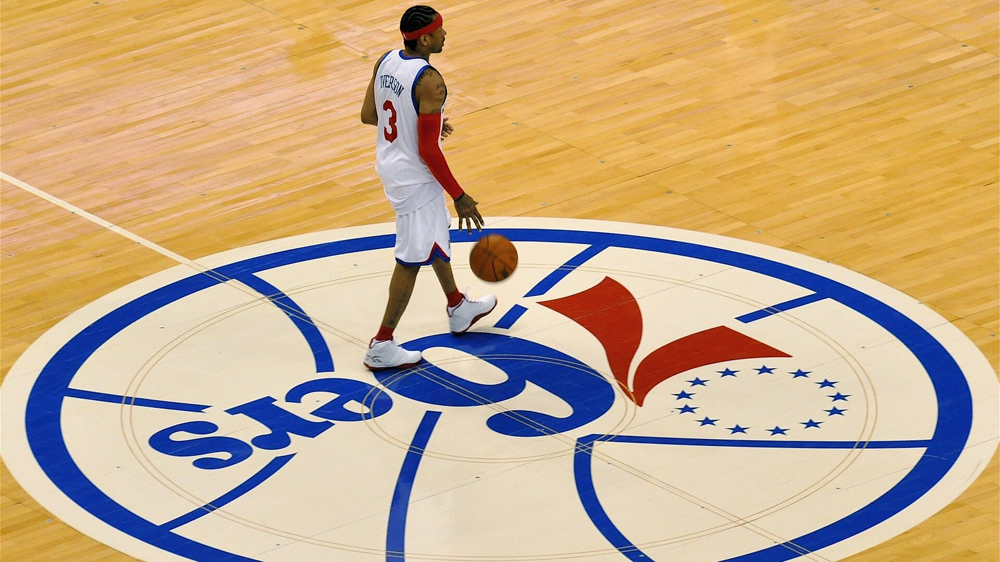
コーンロウとアームスリーブ —— アレン・アイバーソンがコートに持ち込んだ「街」
NBAとヒップホップの距離を一気に縮めた男の話。

シグネチャーシューズは「物語」でできている
スペックではなく、ストーリーがスニーカーを売る理由。

日本のバスケが「カルチャー」になる日
Bリーグ、部活、ストリート。この国のバスケの現在地。
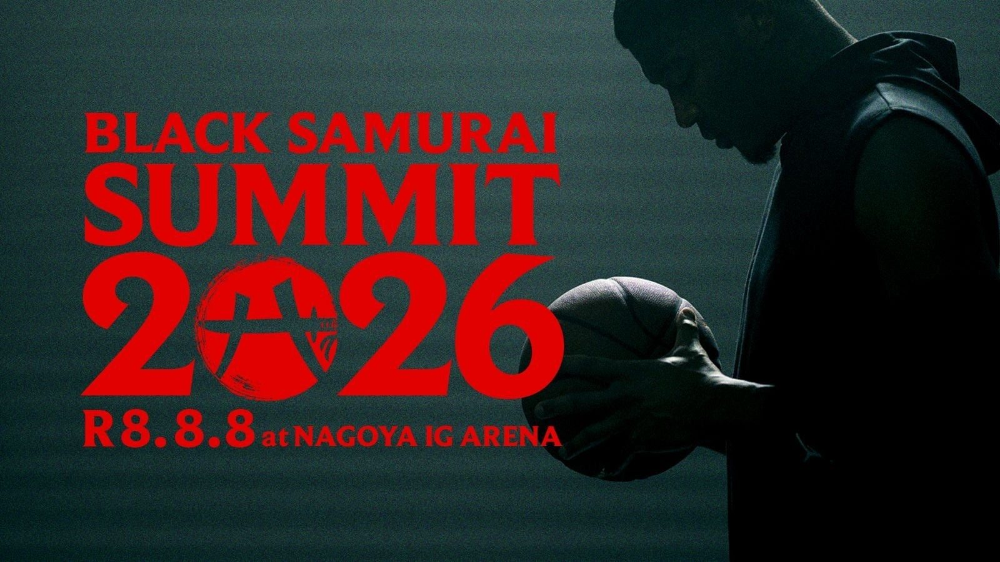
整えることから、始まる —— マンダムが「BLACK SAMURAI SUMMIT 2026」ローカルパートナーに就任
ギャツビーが「部活ヘアサロン」でスタイリングとマインドセットを次世代へ。GAME DAYにはサンプリングも。

160cmの証明 —— 小さな選手たちがコートに残したもの
サイズの神話を壊し続けてきたガードたちの系譜。

神戸の2日間を、神戸が運ぶ —— G LION GROUPが「BLACK SAMURAI KOBE CAMP」モビリティパートナーに
GLION ARENA KOBE開催のキャンプへBMW X7を提供。会場も移動も神戸の企業が支える2日間。

アスファルトの聖地 —— ラッカーパークとストリートの系譜
NBAではない場所で、バスケが文化になった理由。

八村塁が選んだ、次の3人 —— 佐藤凪、トンプソン・ヨセフ・ハサン、磯田陸斗がSUMMITへ
渡米、大学、Bユース。3人3様のルートがIG ARENAに集まる。招待16名の残る1枠はKOBE CAMP MVP。
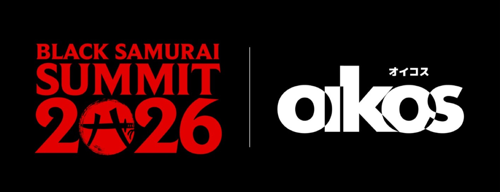
アンバサダーから、パートナーへ —— ダノン オイコスが「BLACK SAMURAI 2026」のゴールドパートナーに
八村塁主宰の次世代育成プロジェクトにダノン オイコスが協賛。神戸・名古屋の2会場でサンプリング等を実施。
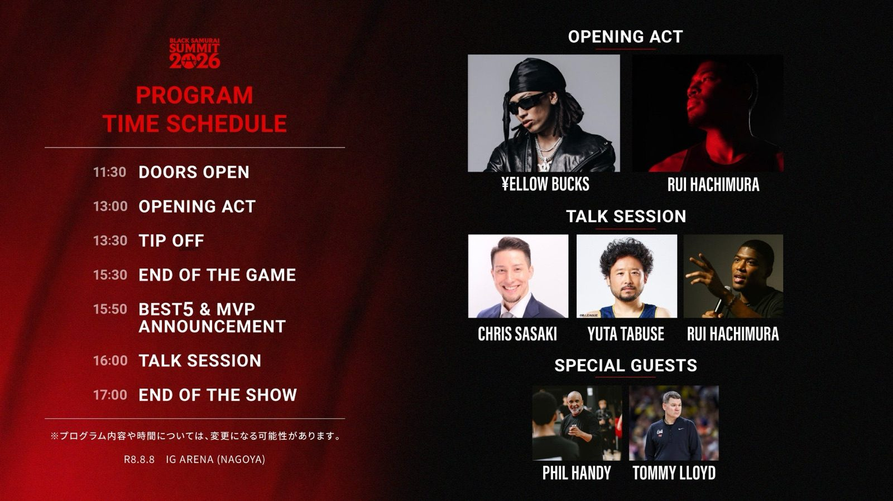
日本バスケの過去・現在・未来を、この3人で —— 田臥勇太×八村塁×佐々木クリス、SUMMITでスペシャル対談
8月8日、名古屋IG ARENAのGAME DAYで実現。テーマは日本バスケットボール業界の過去・現在・未来。

恩師のもとへ、ふたたび —— 小酒部泰暉と、クリスのバスケ日記、2回目の40球を寄贈
2年ぶり2回目のボール寄贈。大磯高校と山北高校へ、計40球。
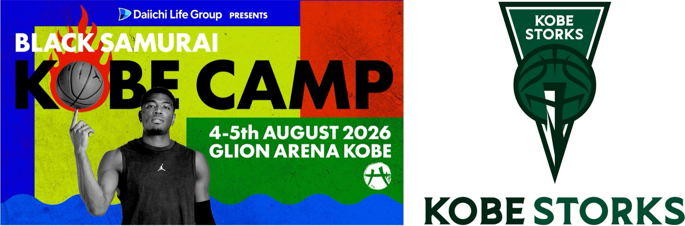
地元のプロが、八村の舞台に上がる —— BLACK SAMURAI KOBE CAMP「THE SHOWCASE」に神戸ストークスが参加
8月4日・5日、GLION ARENA KOBEで全演目発表。8HOOPSで八村率いるチームと地元プロが対戦。

富山に、八村塁が帰ってくる —— NBA入り後初の公式凱旋イベント、8月22日にYKK AP ARENAで
8月22日、富山Homecomingで八村塁がNBA入り後初の公式凱旋。昼はクリニック、夜は祭り。

コートの熱を、写真に残す人を育てる —— キヤノンMJが八村塁主宰「BLACK SAMURAI 2026」に協賛
キヤノンMJがBLACK SAMURAI 2026の神戸・名古屋に協賛。若手スポーツフォトグラファー育成プログラムを実施する。

大濠から3人、開志国際から2人 —— BLACK SAMURAI SUMMIT 2026、招待選手第二弾と指導陣が発表
名古屋・IG ARENAに集うU18招待選手第二弾と指導陣が発表。MVPにはNBA観戦ツアーが贈られる。

同じ街で、新しいユニフォームを —— 八村塁、クリッパーズと2年2800万ドルで契約合意
Shams Charania（ESPN）が一報。レイカーズとのサイン&トレードは成立せず、FA契約で望んだロサンゼルスに残る道を選んだ。

「足りない分は、顧問の自腹」を変えたい —— 小酒部泰暉と、母校へ届けたボール
県大会2回戦止まりだった2人の、恩師と母校へのはじめての恩返し。
610バスケットボールジャーナル（610 JOURNAL）とは？
メディアエージェンシー 610（シックステン）が運営するバスケットボール専門のWebメディアです。NBA、Bリーグ・日本代表などの国内バスケ、キックス（バッシュ・スニーカー）、カルチャーのニュースと読みものを日本語で発信しています。
610（シックステン）とは？
バスケットボールとカルチャーの交差点からブランドの物語をつくる日本（東京）のメディアエージェンシーです。本ジャーナルのほか、動画メディア「クリスのバスケ日記」、トーク番組「POST UP PODCAST」を運営しています。
どんなバスケのニュースを扱っている？
NBAのトレード・契約・引退などの速報（Shams Charania（ESPN）ら一次ソースを明記）、Bリーグ・日本代表・ユース・スクールなど国内バスケの話題、バッシュやスニーカー、バスケにまつわるカルチャー。カテゴリは NBA / JAPAN / KICKS / CULTURE / REPORT の5つです。
記事の情報源は？
すべての記事の末尾に出典（プレスリリース、報道、記者のXポストなど）のURLを明記しています。一次ソースに書かれていない事実は足さない方針で編集しています。
更新頻度は？
国内のバスケ関連プレスリリースとNBAインサイダーの速報を常時チェックし、新しいニュースがあればその日のうちに記事化しています。最新記事は RSS でも配信しています。